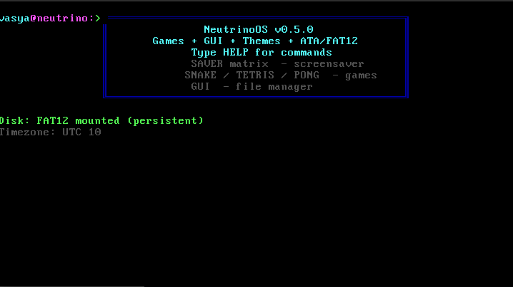
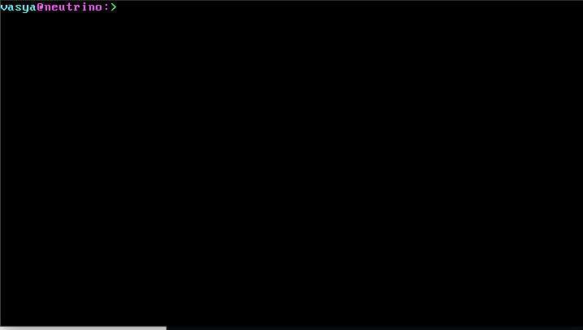
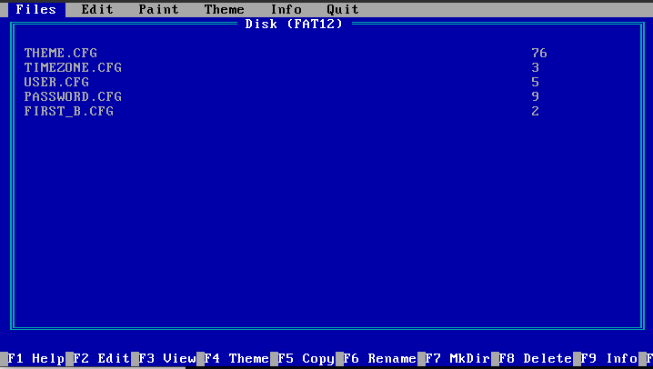
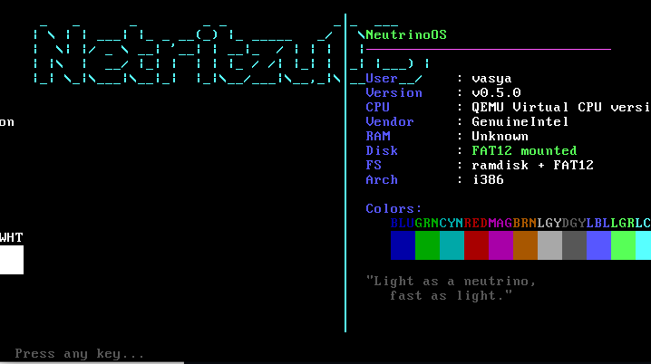
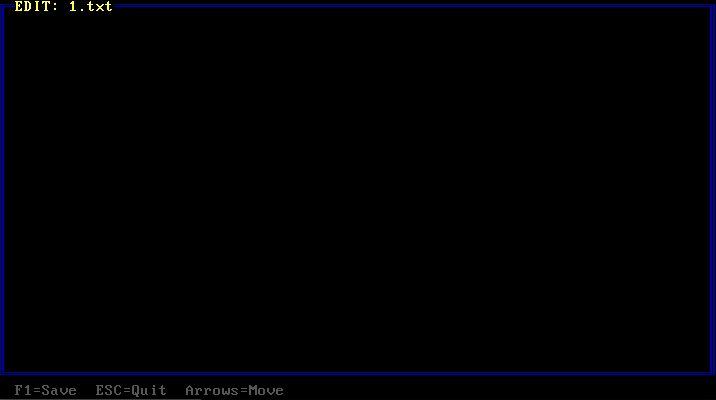
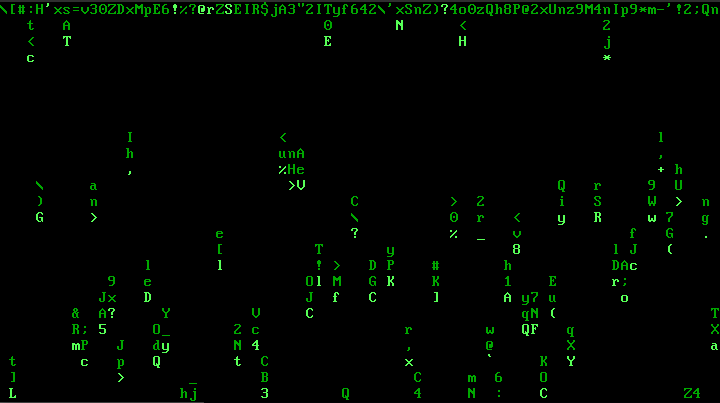

01
Ядро
Точка входа в защищённом режиме. Инициализирует VGA, клавиатуру, ramdisk, диск, читает конфигурацию и передаёт управление оболочке. Работает без прерываний.
32-битное ядро, собственные драйверы, файловая система FAT12 поверх ATA PIO и оболочка с историей команд. Никаких сторонних фреймворков, никаких заимствований. Только C, ассемблер и желание разобраться, как это работает.
Сборка протестирована в QEMU. Работа на физическом оборудовании возможна, но требует машины с BIOS (не UEFI).
| Версия | 0.5.0 |
| Архитектура | x86 (i386+) |
| Режим | Protected, 32-bit |
| Загрузчик | GRUB (multiboot) |
| Языки | C, NASM |
| Объём кода | ~7 500 строк |
| Файлов проекта | 36 |
| Лицензия | MIT |
NeutrinoOS — учебно-практическая операционная система, разрабатываемая как самостоятельный продукт. Она не основана на Linux, Windows, DOS или любой другой существующей системе. Всё, от загрузчика до файловой системы, написано в рамках проекта.
Продукт создаётся как демонстрация того, что можно построить на голом железе без использования готовых операционных решений. Основная аудитория — разработчики, интересующиеся низкоуровневым программированием, и пользователи, которым нужна лёгкая система для старых машин.
32-битный защищённый режим процессора. Загрузка
выполняется через GRUB с использованием спецификации
multiboot. Ядро компилируется GCC в режиме
-m32 -ffreestanding, без стандартной
библиотеки C — все базовые функции реализованы внутри
проекта.
Приоритет отдан прозрачности и понятности кода. Каждый драйвер общается с оборудованием напрямую через порты ввода-вывода. Никаких абстракций сверх необходимого. Прерывания намеренно не используются — весь ввод построен на опросе, что упрощает отладку.
Система однозадачная, без поддержки USB, мыши и сети. Работает только в текстовом режиме VGA 80×25. FAT12 не поддерживает подкаталоги и длинные имена файлов. Установка на физический диск пока не реализована.
Полный перечень подсистем, драйверов и приложений, поставляемых в составе NeutrinoOS 0.5.0.
Точка входа в защищённом режиме. Инициализирует VGA, клавиатуру, ramdisk, диск, читает конфигурацию и передаёт управление оболочке. Работает без прерываний.
Текстовый режим 80×25, 16 цветов. Прямая запись в видеопамять по адресу 0xB8000. Поддержка рамок, блочных символов, смены палитры и курсора.
Опрос порта 0x60. Преобразование скан-кодов в ASCII, поддержка Shift, Caps Lock, Ctrl, функциональных клавиш и стрелок. Кольцевой буфер на 256 событий.
Чтение CMOS RTC через порты 0x70 и 0x71. Поддержка BCD и бинарного формата, 12- и 24-часового режима. Смещение часового пояса применяется при выводе.
Работа с жёстким диском через порты 0x1F0–0x1F7. LBA28-адресация, чтение и запись секторов по 512 байт. Используется файловой системой FAT12.
Полноценная реализация поверх ATA PIO. Чтение и запись файлов, создание каталогов, удаление, работа с таблицей размещения файлов. Файлы сохраняются между перезагрузками.
Файловая система в оперативной памяти. Используется как резервный вариант, если физический диск недоступен. Содержимое не сохраняется при выключении.
Интерпретатор команд с регистронезависимым разбором, историей на 10 записей, автодополнением по Tab и удалением слова по Ctrl+Backspace. Более 35 команд.
Настройки хранятся на диске в отдельных файлах: тема оформления, часовой пояс, имя пользователя, пароль, флаг первой загрузки. Читаются при старте.
Файл AUTOEXEC.NE выполняется при каждом запуске. Поддерживает комментарии и подстановку переменных $username и $timezone. Команды передаются в оболочку.
Двухпанельный интерфейс в стиле Volkov Commander. Верхнее меню, список файлов, строка функциональных клавиш. Встроенный просмотр и редактирование.
Калькулятор, календарь, часы с крупными цифрами, редактор текста, ASCII-рисовалка, рендер множества Мандельброта, пять игр и четыре скринсейвера.
Изображения получены в среде QEMU. Для добавления
собственных снимков замените файлы в каталоге
screenshots/, сохранив имена.








Загрузочный образ и диск с файловой системой доступны для скачивания напрямую. Никаких сборок и установок — скачал, запустил, работает.
ISO-образ для запуска системы в эмуляторе или записи на компакт-диск. Содержит ядро, загрузчик GRUB и все встроенные приложения.
Образ диска с файловой системой FAT12. Подключается к системе как второй диск и служит для сохранения файлов между перезагрузками.
После скачивания обоих файлов запустите эмулятор QEMU следующей командой:
qemu-system-i386 \
-cdrom neutrino.iso \
-drive file=disk.img,format=raw,if=ide,index=0,media=disk \
-m 32M \
-boot d
Если диск с данными не нужен, уберите из команды строку
с параметром -drive. Система запустится
в режиме виртуального диска.
| Компонент | Минимум | Примечание |
|---|---|---|
| Процессор | i386 и выше | Требуется поддержка protected mode |
| Оперативная память | 32 МБ | Рекомендуется 64 МБ |
| Диск | 8 МБ | Образ FAT12 для сохранения файлов |
| Прошивка | BIOS (legacy) | UEFI не поддерживается |
| Эмулятор | QEMU | Пакет qemu-system-x86 |
Перечень задач, запланированных к реализации в следующих выпусках. Порядок и состав могут изменяться.
Пять игр, четыре скринсейвера, звук через PC speaker, сценарий AUTOEXEC.NE, полноэкранный редактор, графический файловый менеджер, система тем и конфигурация на диске.
Обработчики IRQ0 (таймер) и IRQ1 (клавиатура), видеорежим 320×200 с 256 цветами, поддержка мыши через опрос портов, экран критической ошибки, индикатор загрузки.
Продвинутый текстовый редактор, конвейеры и перенаправление вывода, интерпретатор BASIC, переменные окружения, подкаталоги в FAT12, поддержка длинных имён.
Оконный графический интерфейс с панелью задач, собственный формат исполняемых файлов, встроенный ассемблер, поддержка VESA 640×480, установка на физический диск.
Ответы на типичные вопросы о продукте.
Нет. NeutrinoOS — самостоятельная разработка. Собственное ядро, собственные драйверы, собственная оболочка. Сходство с DOS ограничивается общим стилем командной строки, что является осознанным решением.
На ранних этапах разработки обработка прерываний приводила к тройной ошибке процессора. Было принято решение построить ввод-вывод на опросе портов, что упростило отладку. Возврат к прерываниям запланирован в версии 0.6.0.
Да, при наличии машины с BIOS. Система загружается с CD или USB-накопителя. UEFI не поддерживается. Рекомендуется предварительно проверить работу в QEMU.
Файлы, записанные на диск FAT12, сохраняются. Содержимое виртуального диска в оперативной памяти теряется. Для сохранения файла из памяти на диск используется команда SAVE.
Интерфейс и команды оболочки используют латиницу. Поддержка кириллицы в текстовом режиме VGA требует загрузки альтернативного шрифта и пока не реализована.
Все файлы доступны в репозитории проекта по адресу github.com/cosdr/NOS-down. Там же можно сообщить об ошибке через раздел Issues.
В текущем плане развития поддержка сети не предусмотрена. Приоритет отдан прерываниям, графическому режиму и инструментам разработки.
Исходный код доступен по лицензии MIT. Вы можете использовать, изменять и распространять его при условии сохранения уведомления об авторских правах.
Скачайте образ, запустите в QEMU и посмотрите, как выглядит операционная система, написанная с нуля.
Скачать NeutrinoOS 0.5.0